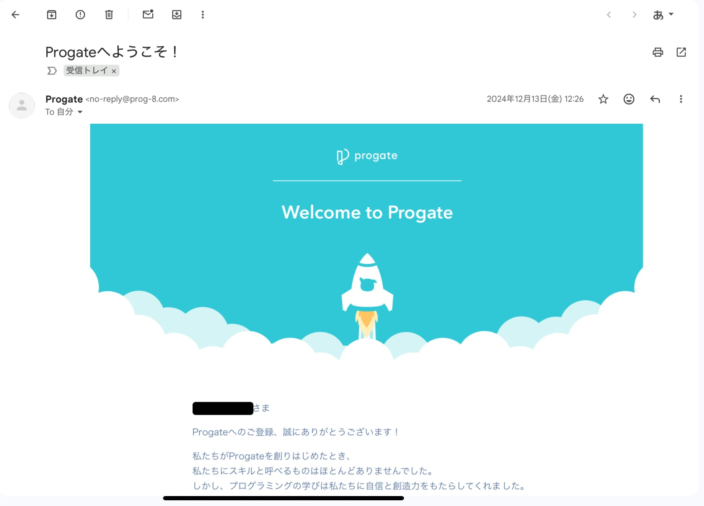

プログラミングを始めて1年が経ちました
プログラミングを始めてついに1年が経ちました！
11月ごろに「ブログ復活するぞ〜」って宣言して記事を書こうと思っていたのですが、 気づいたら今日がちょうど“プログラミング1周年”の日でした。 さすがにこれは逃せない節目だと思ったので、ちゃんと記事を書きます。
今回は、わたしがプログラミングを始めた理由や、その後どうやって続けてきたのかを軽ーく振り返っていこうと思います。
ではいきましょう！
きっかけ
まず、「本当に1年目なのか」と疑問に思う方もいると思うので、証拠の提示をしたいと思いますw

わたしがプログラミングを始めた理由は結構単純で、わたしの友人がProgateでHTMLの学習をしていたのを見て、わたしが面白そうだなって思ったからです。
今もそうなのですがわたし新しいことにすぐ飛びつくタイプなのですよ。面白そうだったらすぐにやり始めちゃう感じですね。
そんな感じでProgateでHTMLを学習し始めました。
その後
ProgateでHTMLを学んだあとさまざまな言語に触れました。 それらをまとめていきたいと思います。
HTML
HTMLはProgateを通して無料プランでできるところだけを全て学びました。でそのあとはネットで他のhtml＆CSSの講座をやってくれてるブログを読み漁って学習してました。
学んだあとは、アウトプットをするために自分でデザインを考えてサイトを作ったりしました。このブログではありませんよ。
ほとんどのサイトは完成せずに終わりましたけどね。
例えばこれ。 これはわたしが初めて作ったサイトですね。サイト名はDawn-Dawnという名前でまあ簡単にいうとこの今のブログみたいなやつを作ろうとしたという感じです。
他にもありまして、Collectio Materiarum というわたしが作成したさまざまな素材を無料で提供して、他のクリエイターやデザイナーが自由に活用できる場を作るというサイトです。
もちろん当時自分が作った素材とかは全くなかったので未完成で終わってます。
HTMLに関してはこんな感じでやっていました。
また、HTMLを通してわたしはVSCodeやその他のツールなどの使い方を学び、今もゲーム制作などでも活用しています。
Swift
HTMLの学習をした私は、徐々にアプリ開発をしてみたいというふうに思うようになりました。そうして、Swiftを学び始めました。
SwiftはAppleが開発した直感的な言語で、公式ではPythonよりも高速に動作するケースがあるとか....。
さて、ProgateにはSwiftの講座はないので、Codecademyといういろんな言語の講座をやっているオンラインサービスを利用しました。
最終的にSwiftで何かしらのアプリを作ることはなかったのですが、Swiftをやってみて学んだ文法に関する知識が今後のプログラミング言語習得に結構役に立つことになります。
C#
初めは私は今作っているゲームとは全くジャンルも違うゲームをUE5で作ろうとしていました。
その内容はストーリー重視のオープンワールドゲームです。
ストーリーも本気で練って作ろうとしていたのですが、UE5が重すぎて私のPCではまともに動いてくれなかったことと、流石にいきなりオープンワールドは無理だったので、計画は中止になりました。
で、新たにこのオープンワールドよりは小さめのゲームを作ろうということで始めたのが今作っているゲームです。
この時私はゲームをせっかく作るなら、他のクリエイターみたいにブログに開発記録を残していったらいいのではないかと考え、このNew!!ハイスペラボを作りました。
Python
ゲーム開発とブログを放置している間にAI開発をしたいと思って学習を始めたのがPythonです。
PythonにはPyTorchというAI開発に欠かせない言語があります。それを使うためにはPythonの基本的な文法の学習が必要です。
その後、PyTorchの学習をしてAI開発に取り組みました。
今後について
今後は私はゲーム開発の方を主軸にどんどん学習・開発を進めていきたいと思っています。もちろんブログもですよ。
ブログの方も隙間時間にどんどん機能を増やしていって、あたかもWordPressで作ったように見えるようなブログにしていきたいと思っています。
あと、記事もちゃんと書きます。
締め
今回は私の今までのプログラミングの経緯やどう言った言語を学習してきたかをまとめました。
これからも引き続きブログの方は運営していくので今後ともよろしくお願いします。
それじゃあバイバイ！